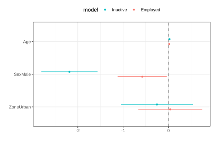

6.2 Multinomial regression model
In household surveys, it is common to find response variables with more than two categories, such as employment status, whose possible states include employed, unemployed, and inactive. When these categories are mutually exclusive and do not have a natural order, an appropriate tool for modeling their relationship with a set of covariates is multinomial logistic regression, which is an extension of the binary logistic regression model.
This model makes it possible to estimate the probability of belonging to each category of the response variable as a function of continuous or categorical explanatory variables. Its application requires the response categories to be exhaustive and mutually exclusive and requires that there be no severe multicollinearity among the covariates. In addition, for continuous covariates, a linear relationship is assumed between them and the logarithm of the odds ratios (log-odds) of each category relative to a reference category.
The multinomial logistic model specifies the probability \(\theta_{k(j)}\) that unit \(k\) belongs to category \(j\), with \(j=1,\ldots,J\), given the covariate vector \(\mathbf{x}_k\), through the following expression:
\[ Pr(Y_{k} = j \mid \mathbf{x}_{k}) = \theta_{k(j)} = \frac{\exp(\mathbf{x}_{k}\boldsymbol{\beta}_j)} {\sum_{l=1}^{J} \exp(\mathbf{x}_{k}\boldsymbol{\beta}_l)} \]
Where \(\boldsymbol{\beta}_j\) is the vector of regression coefficients for the \(j\)-th category. This formulation directly expresses the probabilities of belonging to each category; in practice, it is more convenient to rewrite the model using a reference category. Alternative parameterizations facilitate the interpretation of the parameters, since each set of coefficients describes the effect of the covariates on the logarithm of the odds ratios (log-odds) of belonging to a given category compared with the reference category.
The model parameters are estimated using the pseudo-maximum likelihood approach. Following Heeringa et al. (2017), the multinomial pseudo-likelihood function is defined as
\[ PL(\boldsymbol{\beta} \mid \mathbf{X}) = \prod_{k} \left\{ \prod_{j=1}^{J} \theta_{k(j)}^{y_{k(j)}} \right\}^{w_{k}} \]
Where \(k\) represents the observation units belonging to the complex sample. Likewise, \(y_{k(j)}\) is an indicator variable that takes the value one when that unit belongs to category \(j\) and zero otherwise, and \(w_{k}\) corresponds to the expansion factor associated with the observed unit. For mathematical and computational convenience, the parameters are estimated from the pseudo-log-likelihood, whose maximization leads to the same estimators as the original pseudo-likelihood.
\[ \ell(\boldsymbol{\beta}) = \sum_{k} w_k \sum_{j=1}^{J} y_{k(j)} \log(\theta_{k(j)}) \]
As mentioned above, the estimators obtained through this procedure are consistent and asymptotically normal under regular conditions (Molina & Skinner, 1992). Statistical inference for the parameters of interest is based on variance estimates obtained through Taylor linearization techniques that explicitly incorporate the characteristics of the complex sample design, making it possible to calculate standard errors, confidence intervals, and hypothesis tests appropriate for survey data (Binder, 1983).
For fitting the model using R, as an initial reference, the proportions of persons by employment status are estimated, restricting the units of interest to those older than 15 years, as presented in Table 6.3.
survey_design %>%
filter(Age >= 15) %>%
group_by(Employment) %>%
summarise(proportion = survey_mean(vartype = c("se", "ci")))| Employment | proportion | proportion_se | proportion_low | proportion_upp |
|---|---|---|---|---|
| Unemployed | 0.043 | 0.007 | 0.029 | 0.057 |
| Inactive | 0.384 | 0.015 | 0.354 | 0.414 |
| Employed | 0.573 | 0.014 | 0.545 | 0.601 |
To model a multinomial response variable, the svy_vglm() function from the svyVGAM package (Lumley, 2026) is used; it allows multinomial regression models to be fitted while explicitly incorporating the characteristics of the complex survey design. In this example, a model is specified in which activity status is explained as a function of age, sex, and area of residence. Unlike conventional multinomial models, svy_vglm() calculates the variances of the estimators while accounting for the complexity of the sample design, including stratification, clustering, and expansion weights. In this way, both the point estimates and their standard errors and associated inferences are consistent with the survey design.
library(svyVGAM)
survey_design_15 <- survey_design %>%
filter(Age >= 15)
multinomial_model <- svy_vglm(
formula = Employment ~ Age + Sex + Zone,
design = survey_design_15,
crit = "coef",
family = multinomial(refLevel = "Unemployed")
)The argument family = multinomial(refLevel = "Unemployed") defines a multinomial logistic model using the Unemployed category as the reference. Under this specification, the logarithms of the odds ratios (log-odds) between each of the Employment categories and the reference category are estimated simultaneously. The parameters are obtained through pseudo-maximum likelihood, incorporating the survey expansion factors into the objective function.
Because broom::tidy() cannot be applied directly to objects of class svyVGAM, the following helper function is defined to structure the model results in a standardized tabular format5:
tidy.svyVGAM <- function(x, conf.int = FALSE, conf.level = 0.95,
exponentiate = FALSE, ...) {
ret <- as_tibble(summary(x)$coeftable, rownames = "term")
colnames(ret) <- c("term", "estimate", "std.error", "statistic", "p.value")
coefs <- tibble::enframe(stats::coef(x), name = "term", value = "estimate")
ret <- left_join(coefs, ret, by = c("term", "estimate"))
if (conf.int) {
ci <- broom:::broom_confint_terms(x, level = conf.level, ...)
ret <- dplyr::left_join(ret, ci, by = "term")
}
if (exponentiate) ret <- broom:::exponentiate(ret)
ret %>%
tidyr::separate(term, into = c("term", "y.level"), sep = ":") %>%
arrange(y.level) %>%
relocate(y.level, .before = term)
}Table 6.4 presents the estimated coefficients of the multinomial logistic model, using the Unemployed category as the reference. The results show that age has a positive and statistically significant effect on the relative probabilities of belonging to categories 1 and 2 compared with unemployment. Likewise, the variable SexMale has negative and significant coefficients, indicating that men have lower relative probabilities than women of being in those categories. By contrast, the area-of-residence variable does not show statistically significant effects at the conventional 5% level.
| y.level | term | estimate | std.error | statistic | p.value |
|---|---|---|---|---|---|
| 1 | (Intercept) | 2.556 | 0.550 | 4.648 | 0.000 |
| 1 | Age | 0.022 | 0.010 | 2.117 | 0.034 |
| 1 | SexMale | -2.185 | 0.317 | -6.901 | 0.000 |
| 1 | ZoneUrban | -0.254 | 0.404 | -0.627 | 0.531 |
| 2 | (Intercept) | 2.306 | 0.461 | 4.998 | 0.000 |
| 2 | Age | 0.018 | 0.009 | 2.056 | 0.040 |
| 2 | SexMale | -0.578 | 0.277 | -2.091 | 0.037 |
| 2 | ZoneUrban | 0.039 | 0.361 | 0.109 | 0.913 |
Figure 6.3 shows the confidence intervals of the estimated coefficients for each equation of the multinomial model. The visualization is built with dotwhisker::dwplot() (Solt & Hu, 2025), which makes it possible to compare coefficients and intervals on a common scale, and gtools::stars.pval() (Warnes et al., 2023) is used to encode statistical significance. Covariates whose intervals do not include the value zero show evidence of a statistically significant association with the response variable, while those whose intervals contain zero do not show significant effects at the confidence level considered.
multinomial_results %>%
mutate(
model = if_else(y.level == 1, "Inactive", "Employed"),
sig = gtools::stars.pval(p.value)
) %>%
dotwhisker::dwplot(
dodge_size = 0.3,
vline = geom_vline(xintercept = 0, colour = "grey60", linetype = 2)
) +
guides(color = guide_legend(reverse = TRUE)) +
theme_bw() +
theme(legend.position = "top")
Figure 6.3: Confidence intervals for the coefficients of the multinomial model